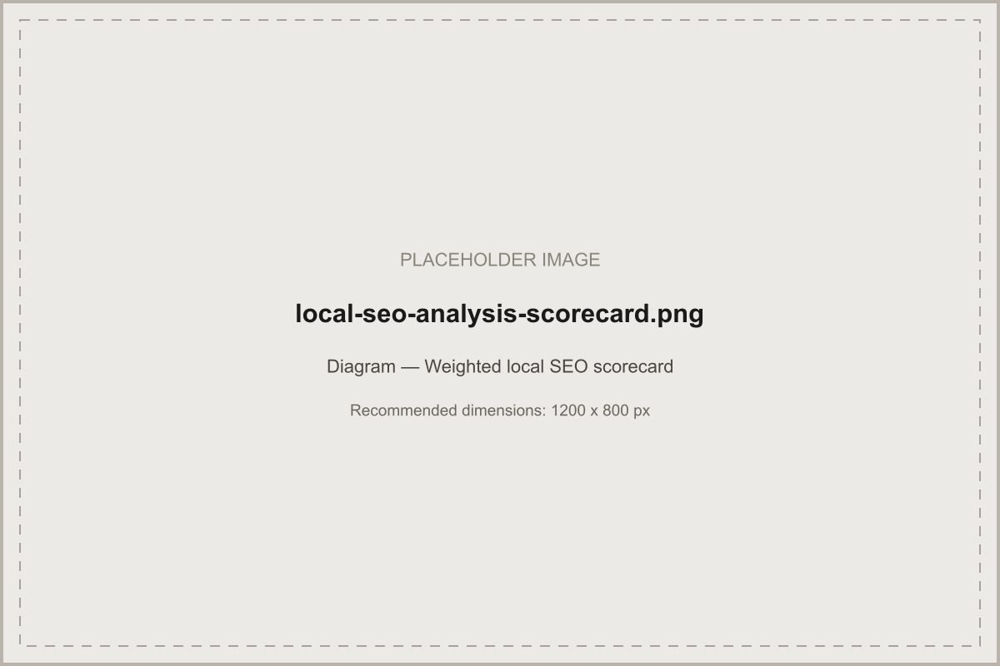

A weighted scorecard for auditing every factor that shapes local visibility — so fixes get prioritised by real impact, not guesswork.
In short: a local SEO analysis audits technical site health, local keyword visibility, Google Business Profile completeness, citation and NAP consistency, review profile, and competitor positioning — then scores each area on a weighted scorecard so fixes can be prioritised by real impact rather than by whichever issue is most visible.
A local SEO analysis is a structured audit of every signal that influences local search visibility, scored consistently so results are comparable across locations, over time, or against competitors. It's the diagnostic step behind both our local SEO strategy framework and our local SEO campaign methodology — establishing a real starting point before deciding what to prioritise.
Before starting a local SEO campaign, after a meaningful ranking drop, when expanding into a new location or service area, or on a routine six-to-twelve-month cadence to catch drift — a category that quietly changed, citations that fell out of sync, technical issues introduced by a site update — before it compounds into a bigger problem.
Confirm crawlability and indexation of key pages, mobile usability, page speed, and whether location or service pages are structured cleanly enough for Google to understand which page should rank for which combination.
Check current visibility for the actual service-location combinations that matter, using a mix of rank tracking and manual spot-checks from different simulated locations if the service area is wide — a single average position can hide pockets of weak visibility within a broader territory.
Score these separately. A business can perform well in one and poorly in the other, and conflating them into a single number hides which lever — Google Business Profile and proximity signals, or website content and backlinks — actually needs attention.
Check photo recency, post activity, Q&A engagement, attribute completeness, and whether services and products listed match what the website says. An abandoned profile — claimed once, never touched again — consistently underperforms an actively maintained one, even with otherwise similar fundamentals.
Confirm the primary category is the single most accurate description of the core business, and that secondary categories are genuinely applicable rather than an aspirational wish list. An overly broad category selection dilutes relevance for the category that actually matters most.
Pull current name, address, and phone data across major directories and data aggregators and flag every inconsistency — this is usually one of the highest-yield fixes in an analysis, since it's both common and straightforward to correct once identified.
Score review count relative to genuine local competitors, how recently reviews have arrived (a steady trickle versus a stale profile with nothing in months), overall rating, and — critically — what share of reviews have a business response. Response rate is one of the more overlooked factors and one of the easiest to fix quickly.
Compare the business against two or three genuine local competitors — not the biggest national brand, but who actually appears alongside it in the Local Pack — across every category above. This turns abstract scores into a concrete, comparative picture of where the real gap is.
Check whether existing location pages are genuinely distinct and locally relevant, or thin and templated with only the place name changed. Thin location pages are one of the more common findings in a local SEO analysis and a frequent source of pages competing against each other instead of covering distinct intent.
Confirm location and service pages are reachable within a few clicks of the homepage and link to each other and up to a central hub, rather than existing as orphaned pages with no supporting internal links.
Review the quality and local relevance of the existing backlink profile, not just volume — a handful of genuinely local, relevant links typically outweighs a larger number of generic, low-relevance ones.
Confirm form submissions, calls, and bookings are actually being tracked and correctly attributed — an analysis that skips this step can't tell whether existing visibility is converting into real enquiries.
Test on a real mobile device, not just a resized browser window — check load speed, tap-target sizing, and whether the primary call-to-action is genuinely easy to find and use on a phone, since most local searches happen on mobile.
Confirm LocalBusiness and Organisation schema is present, accurate, and matches visible page content exactly — mismatched or fabricated structured data (a fake address, an invented rating) creates trust problems rather than ranking benefit.
A sample scoring structure — adjust weights based on how much a given business's visibility genuinely depends on the Local Pack versus organic results:
| Category | Weight | What's scored |
|---|---|---|
| Google Business Profile completeness & category accuracy | 25% | Category, attributes, photos, posts, Q&A, services listed |
| Citation & NAP consistency | 15% | Accuracy across major directories and aggregators |
| Review profile | 15% | Volume, recency, rating, response rate |
| Location-page quality & internal linking | 15% | Distinctiveness, local relevance, linking structure |
| Technical & mobile health | 10% | Crawlability, indexation, speed, mobile usability |
| Local backlink profile | 10% | Relevance and quality of local links |
| Structured data accuracy | 10% | Presence and accuracy of LocalBusiness/Organisation schema |

Illustrative example — not a real client audit. A hypothetical single-location trades business might show: primary GBP category accurate, but only 40% of attributes completed; two abandoned duplicate listings competing with the active profile; NAP inconsistent across three of eight checked directories; strong review rating but a 90-day gap since the last new review; a single generic location page reused for two distinct service areas. This kind of pattern — strong on one dimension, weak on several others — is typical of a business that set up local SEO once and never revisited it.
Fix critical, blocking issues first regardless of scorecard weight, then work down by weight-adjusted impact: usually Google Business Profile completeness and category accuracy, then citation consistency and review response, then location-page quality, then technical and backlink work. This mirrors the sequencing in our Local Growth Framework.
Citation sources and directory relevance can vary by UK region and industry — check citations against directories genuinely relevant to the business's specific area rather than applying a single generic list everywhere. Competitive density also varies significantly by city and region across the UK, which affects how aggressively backlink and content work should be weighted relative to foundational fixes.
A local SEO analysis is a structured audit of every factor influencing a business's local search visibility — technical site health, Google Business Profile completeness, citation consistency, review profile, and competitor comparison — scored against a weighted framework so fixes can be prioritised by real impact.
Before starting any local SEO campaign, after a significant ranking drop, when expanding into a new location or service area, or on a routine cadence (roughly every six to twelve months) to catch drift in citations, categories, or technical health before it compounds.
They're driven by different signal weightings and should be scored separately in an analysis. A business can score well on Local Pack factors like Google Business Profile and proximity while scoring poorly on organic factors like content depth and backlinks, or the reverse — a combined score would hide which one actually needs attention.
Critical issues that block visibility entirely — like an unverified or suspended Google Business Profile, or pages blocked from indexing — come first, regardless of scorecard weighting. After that, prioritise by the combination of scorecard weight and how quickly the fix can realistically be made.
Get a free local SEO audit scored against this exact framework.
Request a Free Local SEO Audit →
What this analysis is diagnosing you against.

Turning analysis findings into an executable plan.

How the scorecard applies across ten business types.

The broader technical audit this analysis complements.
Written and reviewed by the Acendia International Editorial Team, part of Acendia International, an SEO agency working with businesses across the United Kingdom. See our editorial approach for how we research, write, and review our guides. Published 4 August 2026. Last updated 4 August 2026.
Book a free strategy call and get a scored breakdown of what's holding your local visibility back.